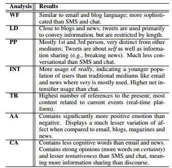
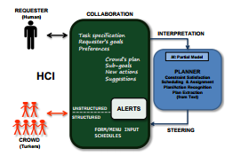
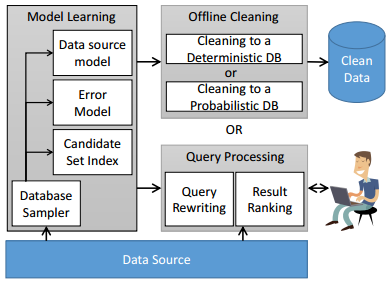

<!DOCTYPE html>
<html xmlns="http://www.w3.org/1999/xhtml">
<head>
    <meta http-equiv="Content-Type" content="text/html; charset=utf-8" />
    <title>Yuheng Hu, Arizona State University</title>
    <!-- Website Styles -->
    <link rel="stylesheet" href="files/style.css" type="text/css" media="screen" />
     <link href='http://fonts.googleapis.com/css?family=Roboto:400,700,900' rel='stylesheet' type='text/css'/>
    <link href='http://fonts.googleapis.com/css?family=Roboto+Slab:400,700' rel='stylesheet' type='text/css'/>
</head>

<body>
    <div id="wrapper">
        <!-- HEADER START -->
        <div id="header">
            <div class="inner">
                <div class="logo">
                    
                </div>

                <div class="log">
                    <p>Yuheng Hu</p>
                </div>

                <div class="nav">
                    <ul>
                        <li>
                            <a href="index.html">Home</a>
                        </li>
                        <li class="current">
                            <a href="projects.html">Projects</a>
                        </li>
                        <li>
                            <a href="publications.html">Publications</a>
                        </li>
                        <li >
                            <a href="service.html">Service</a>
                        </li>
                        <li>
                            <a href="teaching.html">Teaching</a>
                        </li>
                        <li>
                            <a href="misc.html">Misc.</a>
                        </li>
                    </ul>
                </div><!-- #nav end -->
                <div class="clear"></div>
            </div><!-- .inner end -->
        </div><!-- #header end -->

        <!-- MAIN CONTENT START -->
        <div id="main">
            <div class="inner">
			
			<h3>Research projects</h3>
                 <h4> Event Analytics on Social Media</h4>
				 <table class="table">				 
                    <tbody>
                        <tr>
                            <td class="pic2"></td>
                            <td class="content">
                                <p>Social media channels such as Twitter have emerged as platforms for crowds to respond to public and televised events such as speeches and debates. However, the very large volume of responses presents challenges for attempts to extract sense from them.</p>
                                <p>In this project, we first develop an analytical method (ET-LDA) based on joint statistical modeling of topical influences from the events and associated Twitter feeds. The model enables the auto-segmentation of the events and the classification of tweets into two categories: general and specific, depending on the topical similarity between tweets and event's segments.</p> 
                                <p>By applying this ET-LDA model to several events (2012 Presidential debates, President Obama's press conferences, etc), we found that the crowd’s responses tended to be general and steady before the event and after the event, while during the event, they were more specific and episodic. We also found that the crowd showed different levels of engagement in different kinds of events. Our final finding is that the topical context of the tweets did not always correlate with the timeline of the event. </p>
                                <p>In the second part of this project, we develop a matrix factorization framework (SocSent) which automatically characterizes an event's segments and topics in terms of the aggregate sentiments elicited on Twitter. It leverages three types of prior knowledge: sentiment lexicon, manually labeled tweets and tweet/event alignment from ET-LDA, to regulate the learning process. </p>   
                                <p>Read more: <a href="http://dl.acm.org/citation.cfm?id=2072638">SBNMA-11</a>, <a href="http://www.public.asu.edu/~yuhenghu/paper/icwsm12.pdf">ICWSM-12</a>, <a href="http://www.public.asu.edu/~yuhenghu/paper/aaai12.pdf">AAAI-12</a>, <a href="http://www.public.asu.edu/~yuhenghu/paper/ijcai13.pdf">IJCAI-13</a>. Press coverage: <a href="https://asunews.asu.edu/20130920-kambhampati-twitter-analysis/">ASU news</a> and <a href="http://www.azpbs.org/video/horizon.php?vidId=2331">AZ PBS Horizon show</a></p>
                        </p>
                            </td>
                        </tr>

					</tbody>
                </table>	
						
                  <h4>Facilitating Civic Engagement and Situation Awareness For Hyperlocal Communities Using Social Media</h4>
				 <table class="table">				 
                    <tbody>
                        <tr>
                            <td class="pic2"></td>
                            <td class="content">
                                <p>Social media systems promise powerful opportunities for people to connect to timely, relevant information at the hyper local level. Such connection is vital to people's siutation awareness, and will potentially affects fostering their sense of community. Yet, finding the meaningful signal in noisy social media streams can be quite daunting to users.</p>
                                <p>In this project, we present and evaluate Whoo.ly, a web service that provides neighborhood-specific information based on Twitter posts that were automatically inferred to be hyperlocal. Based on several machine learning algorithms, Whoo.ly automatically extracts and summarizes hyperlocal information about events, topics, people, and places from these Twitter posts.</p>
                                <p>Read more: our <a href="http://www.public.asu.edu/~yuhenghu/paper/CHI13.pdf">CHI-13 paper </a> on Whoo.ly. Press coverage: <a href="http://blogs.seattletimes.com/microsoftpri0/2013/08/22/microsoft-launches-whooly-localized-twitter-project/">The Seattle Times</a>, <a href="http://www.fastcoexist.com/3017494/a-hyperlocal-twitter-filter-that-gets-neighbors-talking-to-each-other">FastCompany</a>, <a href="http://computermagazine.com/2013/08/22/microsoft-research-launches-whooly-localized-twitter-project/">Computer Magazine</a> and <a href="http://www.neowin.net/news/microsoft-research-launches-beta-of-twitter-aggregator-whooly">Neowin</a>. Summary at <a href="http://crowdresearch.org/blog/?p=6042">Follow the Crowd</a>. <br /><br />And also a 20s YouTube preview: <br /><iframe width="420" height="315" src="http://www.youtube.com/embed/2up5uxS1iMM?rel=0" frameborder="0" allowfullscreen></iframe></p>
                                <p>Try Whooly system: <a href="http://whooly.net/">http://whooly.net</a> (login with your Twitter account). Here are Some screenshot of the Whooly system: <br />
                                 <div class="one_half">
                                     
                                     </div>
                                    <div class="one_half last">   
                                     
                                    </div>
                                </p>
                            </td>
                        </tr>

					</tbody>
                </table>	

                 <h4>Linguistic Analysis of Twitter's Language</h4>
				 <table class="table">				 
                    <tbody>
                        <tr>
                            <td class="pic2"></td>
                            <td class="content">
                                <p>Given the factors that influence language on Twitter – size limitation as well as communication and content-sharing mechanisms – there is a continuing debate about the position of Twitter’s language in the spectrum of language on various established mediums. These include SMS and chat on the one hand (size limitations) and email (communication), blogs and newspapers (content sharing) on the other.</p>
                                <p>In this project, we propose a computational framework that offers insights into the linguistic style of all these mediums (Twitter posts, email, newspaper, SMS, IM, magazines). Our framework consists of two parts: 1) Sociolinguistic Analysis and 2) Psycholinguistic Analysis. </p>
                                <p>We gained several key insights: (1) Twitter’s language is surprisingly more conservative, and less informal than SMS and online chat; (2) Twitter users appear to be developing linguistically unique styles; (3) Twitter’s usage of temporal references is similar to SMS and chat; and (4) Twitter has less variation of affect than other more formal mediums.</p>                             
                                <p>Read more: <a href="http://www.public.asu.edu/~yuhenghu/paper/icwsm13.pdf">ICWSM-13</a>. Summary at: <a href="http://crowdresearch.org/blog/?p=7118">Follow the Crowd</a></p>
                            </td>
                        </tr>

					</tbody>
                </table>	
						
						
				<div class="divider line"></div>		

				<h3>Other research projects that I involved</h3>
                <h4>Automated Planning for Crowdsourcing</h4>
				 <table class="table">				 
                    <tbody>
                        <tr>
                            <td class="pic2"></td>
                            <td class="content">
                                <p>Crowdsourced planning applications appear to have very little to do with existing automated planning methods, since they seem to depend solely on human planners. However, a deeper look at these applications shows that most of them use primitive automated components in order to enforce checks and constraints which are traditionally not the strongsuit of human workers – herding the proverbial sheep, in a manner of speaking.</p> 
                                <p>More importantly, experiments show that even these primitive automated components go a long way towards improving plan quality for little to no investment in terms of cost and time.</p>
                                <p>To this end, in this project, we present a general architecture that foregrounds the potential roles of an automated planner in crowd-planning</p> 
                                <p>Read more: <a href="http://www.public.asu.edu/~yuhenghu/paper/hcomp13.pdf">HComp-13</a></p>
                           </td>
                         </tr>
					</tbody>
                </table>		 

                 <h4>BayesWipe: A Multimodal System for Data Cleaning and Query Processing.</h4>
				 <table class="table">				 
                    <tbody>
                        <tr>
                            <td class="pic2"></td>
                            <td class="content">
                                <p>Both data cleaning, and query processing to obtain clean results over inconsistent structured data have occupied the center stage again thanks to the mass of uncurated web data and big data.</p>
                                <p>In this project, we propose a novel data cleaning and query processing system called BayesWipe that employs an end-to-end probabilistic framework to eliminate dependence on clean master data, and a novel query rewriting model to go beyond oine rectication to on demand cleaning.</p>
                                <p>Read more: <a href="http://arxiv.org/pdf/1204.3677 ">ASU-TR 2012</a></p>
                            </td>
                        </tr>

					</tbody>
                </table>		 
				
            </div>
        </div>
    </div><!-- wrapper End -->

    <div id="footer"> <!-- FOOTER START -->
       
        
       
        <div class="footer_small">
            <div class="copyright">
                &#169; 2010 - 2015 <a href="http://www.public.asu.edu/~yuhenghu/">Yuheng Hu</a> - All rights reserved.
            </div>
        </div><!-- #footer_small End -->
        
    </div> <!-- FOOTER END -->
    
</body>
</html>
